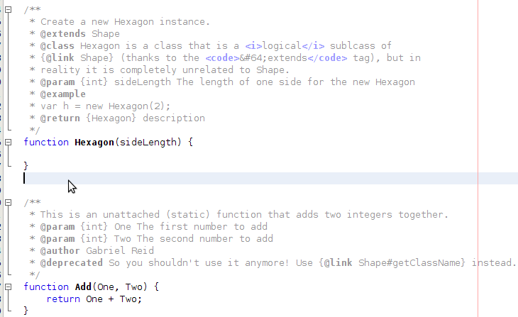
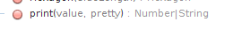

NetBeans Testing App
NetBeans 7.3
JavaScript documentation support
Coloring
Copy following code and make sure that it looks like in the image below
/**
* Create a new Hexagon instance.
* @extends Shape
* @class Hexagon is a class that is a logical sublcass of
* {@link Shape} (thanks to the @extends tag), but in
* reality it is completely unrelated to Shape.
* @param {int} sideLength The length of one side for the new Hexagon
* @example
* var h = new Hexagon(2);
* @return {Hexagon} description
*/
function Hexagon(sideLength) {
}
/**
* This is an unattached (static) function that adds two integers together.
* @param {int} One The first number to add
* @param {int} Two The second number to add
* @author Gabriel Reid
* @deprecated So you shouldn't use it anymore! Use {@link Shape#getClassName} instead.
*/
function Add(One, Two) {
return One + Two;
}

@type
/**
*
* @type Bar
*/
function foo(){}
- Task: @type for functions
- Copy & Paste the code above
- Result: Make sure that Navigator and code completion show Bar as returned type
/**
var d;
- Task: @type for variables
- Copy & Paste the code above
- Place cursor at the end of the line with 2 asterisks and hit Enter
- Rest of @type annotation is completed
- change "type" to "Date"
- Result: Navigator and code completion show Bar as variable type. Invoke code completion for "d." and make sure that members of Date are offered
Class recognition
Use following code:
/**
* @class
*/
function TestA(){}
/**
* @constructor
*/
function TestB() {}
/**
* @constructs
*/
function TestC() {}
- Task: Class recognition
- Paste the code above to JS file
- Result: All functions are recognized as "classes" (constructors) in Navigator window (they have the yellow diamond icon)
Autogenerating documentation
Use following code:
/**
function print(value, pretty) {
if (pretty)
return "<h1>" + value + "</h1>";
else
return 0;
}
and press Enter after the "/**". The result should look like
/**
*
* @param {type} value
* @param {type} pretty
* @return {Number|String}
*/
function print(value, pretty) {
Now check the Navigator looks like this:

NetBeans tries to identify the return type so you can even removed the @return annotation. Or you can add some other type like
/**
* Hey there...
* @param {String} value String to be printed
* @param {Boolean} pretty
* @return {Foo|Bar|String} Some random object
*/
function print(value, pretty) {
and see that Navigator reflects the change.
- Task: Code Completion
- In JavaScript file, type "pr" and invoke code completion
- select function print()
- Result: Code completion look like on the image below
Autogenerating documentation II
Use following code:
function Printer(name) {
/**
this.print = function(value, pretty) {
if (pretty)
return "<h1>" + value + "</h1>";
else
return 0;
};
}
and press Enter after the "/**". The result should look like
/**
*
* @param {type} value
* @param {type} pretty
* @return {Number|String}
*/
this.print = function(value, pretty) {
Again check Navigator and code completion.
Information in Help Window
Help window can use following tags: @deprecated, @see, @param, @extends, @since, @returns, @example and @throws
Try following sample in NetBeans and make sure Help window shows correct information
/** * Here is some text * @deprecated because it lies, use addEvo instead * @see This is NetBeans! * @param {Number} a first number * @param {Number} b second number * @extends Object * @since version 7.3 * @returns {void} nothing useful * @example * var c = sum(1,2); * @throws {OutOfMemeory} always */ function sum(a, b) { return a+b+1; }
Incorrect documentation hint
Use following code:
/**
* @param foo
* @param bar
* @param void
*/
function test(foo, bar, foobar){}
- Task: Incorrect documentation hint
- In JavaScript file, paste the code above
- Result 1: NetBeans shows warning hint about undocumented parameter foobar
- Result 2: NetBeans shows warning hint about incorrect documentation void
Optional argument support
Use following code:
/**
* @param foo
* @param bar
* @param [foobar] Optional
*/
function test(foo, bar, foobar){}
- Task: Optional argument
- In JavaScript file, paste the code above
- Result 1: NetBeans shows warning hint about undocumented parameter foobar
- Result 2: NetBeans shows warning hint about incorrect documentation void